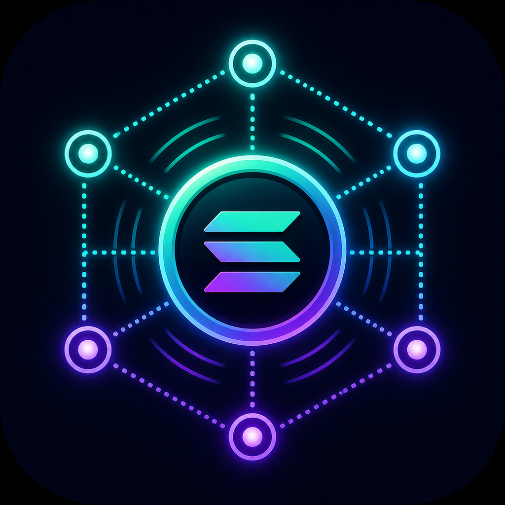

Privacy first
The server never receives private keys. All signing happens on the client.

SoltasticA decentralized last-mile communication layer that moves signed Solana transactions through local mesh networks and relays them to RPC nodes.
Problem
When internet access fails, users lose the ability to move value, accept payments, execute transactions, or react to urgent financial events.
Sky Business research reports that UK SMEs affected by running out of mobile data lose over £3,400 per year on average, with 56% reporting lost sales, bookings, or opportunities.
Sky Group researchRemote areas, disaster zones, fieldwork, festivals, outages, and censorship-resistant environments all need a way to broadcast value without relying on mobile internet.
Solution / How it Works

Demo / App

The demo shows the basic version: init request, balance request, Durable Nonce creation, SOL transaction metadata and signatures, relay reconstruction, RPC broadcast, and hash confirmation.
Features
The server never receives private keys. All signing happens on the client.
Durable Nonces let transactions live beyond the short blockhash window.
Advanced Nonce values change after use, preventing replayed spending.
LoRa-based nodes provide the last-mile path when mobile data is absent.
Solana wallets can sign client-side without delegating assets to relayers.
A server listens on the mesh channel and communicates with Solana RPC.
Tech Stack / Powered by
Roadmap
Community & Social Proof